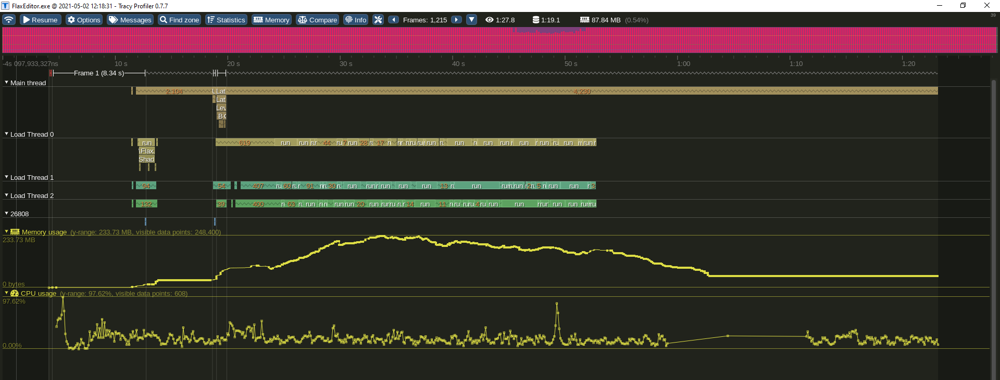
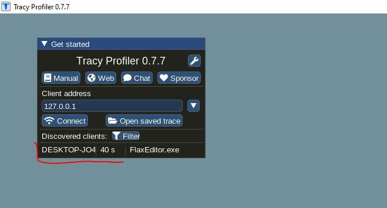
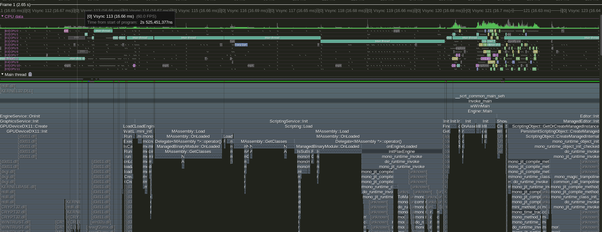
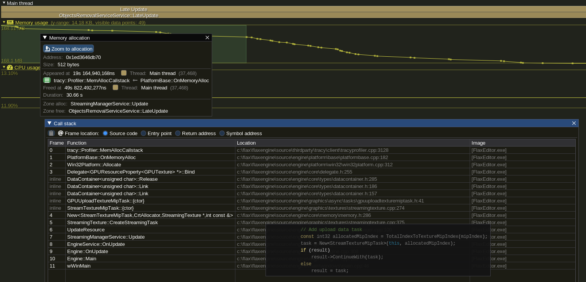

Tracy Profiler
Tracy is C++ frame profiler and can be downloaded here.
Tracy supports profiling CPU, threading, memory, locks, context switches, and more. It's integrated into Flax and can be used to profile both game and engine in Editor or in cooked build (Debug or Development configurations).
Tip
Profiling Editor with Tracy after scripting hot-reload is not supported. Can be optionally enabled in custom engine build with PROFILE_CPU_USE_TRANSIENT_DATA set to 1 (see ProfilerCPU.h).
Setup

Download latest Tracy from Github releases, extract Tracy-<version>.7z file and run Tracy.exe. It will show active Flax. Double-click to connect and start collecting profiling data.

Tip
Use Tracy.pdf manual to learn more about profiling and performance measurements.
Profiler integration
Use Flax API to inject profile blocks:
Automated data collection

Tracy supports automatic instrumentation of the profiled code without injecting the profiler sections/macros. To do so run Flax with admin rights (privilege elevation). In this mode, Tracy will also capture the CPU cores usage by other processes and will allow for more complex application profiling.
Memory Profiling

Flax automatically captures the callstack for memory allocations and frees. This can be used in Tracy profiler app to analyze memory usage.